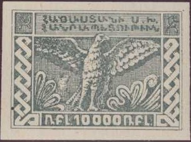
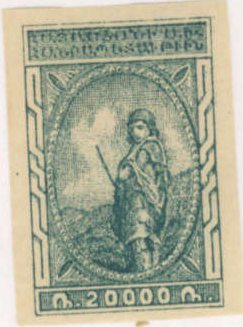
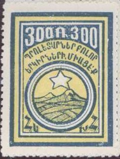
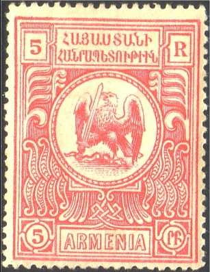

Return To Catalogue - Armenia, part 1 - Russia - Transcaucasian federation
Note: on my website many of the
pictures can not be seen! They are of course present in the
catalogue;
contact me if you want to purchase the catalogue.


100 R red (woman with spinning wheel) 100 R black 250 R red (bird 250 R black 500 R red (cows with wagon) 500 R black 1000 R red (standing woman) 1000 R black 2000 R red (landscape with mountains) 2000 R black 5000 R red (man on horse with mountains in background) 5000 R black 10000 R red (mythical bird) 10000 R black 20000 R red (man with gun) 20000 R black Manually surcharged (in various types)
1 k on 250 R red 1 k on 250 R black 2 k on 500 R red 3 k on 500 R black 4 k on 1000 R red 4 k on 1000 R black 5 k on 2000 R black 10 k on 2000 R red 15 k on 5000 R red 20 k on 5000 R black


50 R green and orange (arms, hammer and sickle with mountains in background) 300 R blue and yellow (moutains and star in circle) 400 R blue and red (arms) 500 R lilac (mythical bird) 1000 R blue and green (man in boat) 2000 R black and yellow (bird with man's face) 3000 R black and green (sowing farmer) 4000 R black and brown (mythical animal with wings) 5000 R black and lilac (blacksmith) 10000 R black and lilac (ploughing farmer) Manually surcharged in violet, red or black
'10000' (violet) on 50 R green and red '15000' (violet or black) on 300 R blue and yellow '25000' (violet or black) on 400 R blue and red '50000' (red or violet) on 1000 R blue and green '30000' (violet or black) on 500 R lilac '75000' on 3000 R black and green '100000' (red or violet) on 2000 R black and grey '200000' (violet or black) on 4000 R black and brown '300000' (violet or black) on 5000 R black and red '500000' (violet or black) on 10000 R black and lilac
Forgeries exists. The forgery of the 300 R does not have horizontal white lines in the yellow space behind the star. It also does not have white tops of the mountains (snow), but yellow mountain tops instead.

Probably a forgery of the 1000 R stamp, the last character of the
first line of the bottom inscription is different in the genuine
stamps.

Genuine stamp (note thick left outer frameline)
1 r brown 3 r green 5 r red 10 r blue 15 r violet
These stamps were prepared but not issued, reprints probably made from the original plates exist.


Reprints
Forgeries also exist and are more common than genuine stamps as described in the book 'Focus on forgeries'. According to this book, in all forged values (except 3 r), the left frame line is much too thin. The values, the word 'R' in the upper right corner and the word 'rf' in the lower right corner often have white patches in them in the forgeries. This is how the 3 r forgery can be distinguished. ' Examples of such forgeries:
Fiscal stamp:
Fiscal stamp with circular overprint and manual surcharge 30.000
Mount Ararat

25 r green and brown 50 r blue and brown 100 r red and brown Woman at a spinning wheel

40 r orange and brown 70 r violet and brown
I have seen imperforate stamps (also with inverted or missing center); they are probably some kind of reprints (see also the previous issue).
Imperforate stamp with no center
Imperforate 70 r stamp with inverted center

Other fiscal stamp of Armenia; fiscal stamp of Russia with
circular overprint.
Revenue stamps
{kind=link}